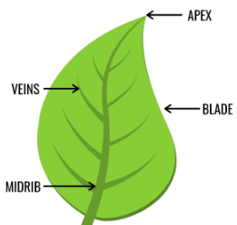

Leaf Apex is a protruding part of a leaf. There are no definite function of leaf apex but in some plants it is modified to deliver a task and that is as spines in some xerophytes so that they can stand against

BLADE
Typically, a leaf consists of a broad expanded blade (the lamina), attached to the plant stem , are located on each side of the leaf base and may resemble scales, spines, glands, or leaflike structures.
VEIN
The veins are the vascular tissue of the leaf and are located in the spongy layer of the mesophyll. The pattern of the veins is called venation. In angiosperms the venation is typically parallel in monocotyledons and forms an interconnecting network in broad-leaved plants.
MIDRIB
The central, thick, linear structure that runs along the length of a plant thallus or lamina. It occurs in true leaves as a vein running from the leaf base to the apex and in the leaf-like structures of mosses and seaweeds.